OSU Meet up
In March we joined the digital Meet up of iGEM OSU. A lot of iGEM teams from all over the world were part of it. We discussed with a lot of teams where to start with their project and how to participate in the competition. In addition to that, we got to know our cooperation partners iGEM Tue, iGEM Düsseldorf, and iGEM Bonn.

Figure 1:
International Survey about GMOs
In May we met with iGEM Maastricht. They asked if we are interested in creating a survey about GMOs with iGEM IISER Tirupati and iGEM IISER Pune. In a few meetings, we designed a questionnaire with specific questions about the topics the different teams were working on. We were really interested in how the attitude towards GMOs changes depending on age and education.

Figure 2: Picture of our collaboration meeting
iGEM Monument Challenge
During the summer iGEM GO Paris Saclay organized the iGEM Monument Challenge. We thought that it was a really great idea and took part in it. We showed the Karlsbrunnen, Aachen's Cathedral and the Elisenbrunnen.

Figure 3: Aachen's Cathedral.

Figure 4: Karlsbrunnen

Figure 5: Elisenbrunnen
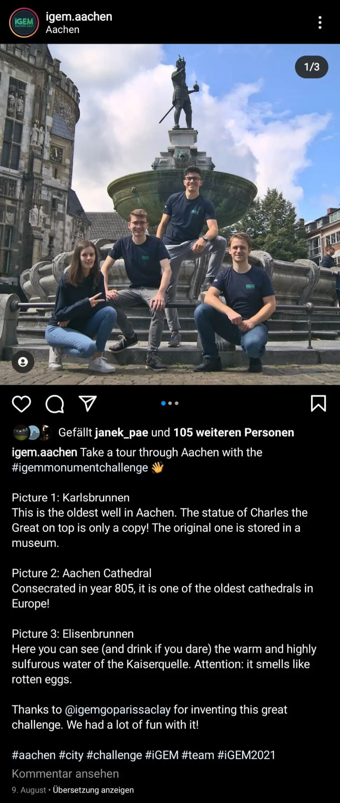
Figure 6: Our Instagram Post.
Postcard Challenge
As every year the iGEM Team of the Heinrich-Heine-University reached out to us offering to participate in their postcard challenge. The task was to design a synthetic biology or project-related postcard and to send copies to Düsseldorf. In return, they send us postcards of the other participating teams. Our postcard shows a TdT cartoon-like with DNA. We decided on this illustration because the TdT was the main enzyme of our project.

Figure 7: Our postcard.
Science Communication Through Non-Typical Forms of Education in Greece
Science communication is an important part of the iGEM journey. It is a great way of making science more accessible and appealing to people with different backgrounds or from different age groups. This year Team iGEM Thrace organized an Erasmus+ program on this topic, called “Science Communication Through Non-Typical Forms of Education” and we took part in it.

Figure 8: Group photo on the first day.
Together with 16 other iGEM members from various countries, they examined the question of how to communicate science to the public. They started with brainstorming ideas and discussing the goals of science communication the month before the actual meet-up in Greece. For the meet-up Clemens, Marie K., Willy, and Viktor from our team traveled for one week to Greece, Alexandroupoli. After many workshops, the group learned how to communicate science in different unusual ways such as theatre, debate, music, drawing, etc. They set their goal to educate the locals on the following three scientific topics:
- Synthetic Biology
- Vaccines
- Climate Change
For that, the group was divided into three teams that meticulously researched, wrote, and rehearsed throughout their stay. The teams had the one-of-a-kind opportunity to grasp the magic of theatre in the country where it emerged while working together with natives. This boosted their creativity and they managed to combine fun with an important take-home message for the audience. For days they were dedicated to creating their masterpiece through theatre, painting, and music.
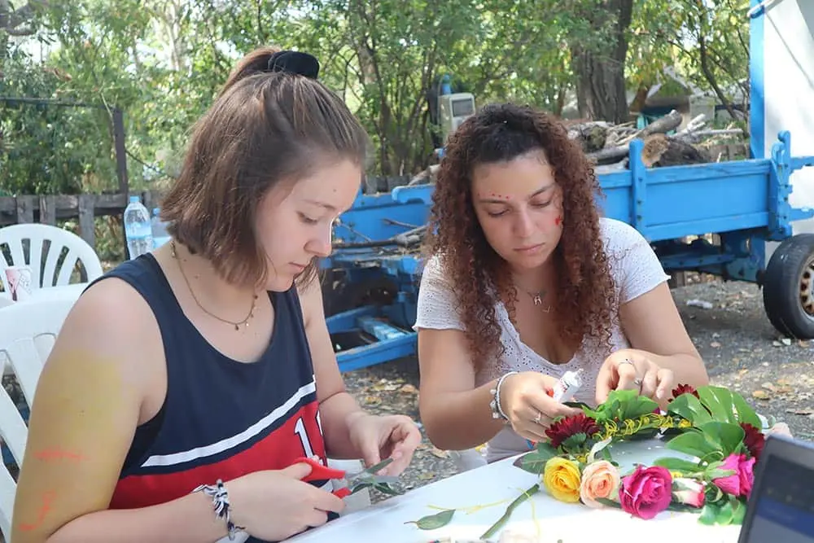
Figure 9: Preparing the props for the theatre plays.
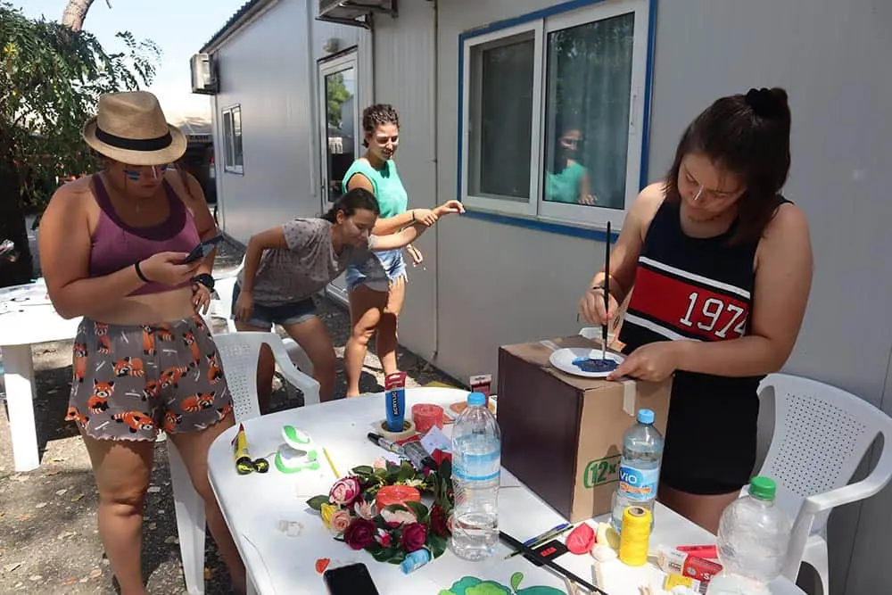
Figure 10: Preparing the props for the theatre plays.
The international group then reached out to people of all ages and backgrounds to invite them to their theatre performances through social media, flyers, and even the local radio. As a result, the play was attended by many people and even the city mayor. The plays ran like a well-oiled machine, everybody knew their tasks and did them thoroughly. In the end, the young Shakespeares were vigorously applauded by the audience and received a speech of gratitude from the mayor.
Upon their arrival back in Germany, our teammates implemented the gained knowledge about science communication and organized fun and educational dissemination activities. They hosted an online event together with the iGEM Teams Marburg and Hamburg where they played a variation of hang-man with scientific words. Our teammates also went to the climate change protest march of Fridays For Future. Their goal was to educate people about the small changes that matter. Thus, our team members gave out flyers with some ideas on what one could change in their everyday life to prevent worsening of the climate change.
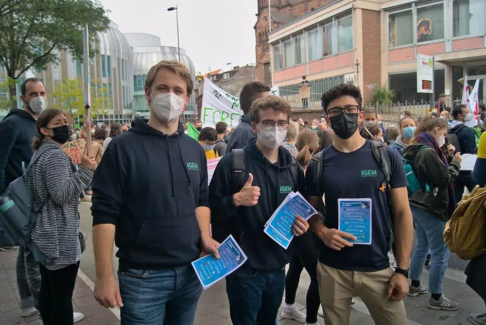
Figure 11: Malte, Clemens and Viktor at the climate change protest march of Fridays For Future.
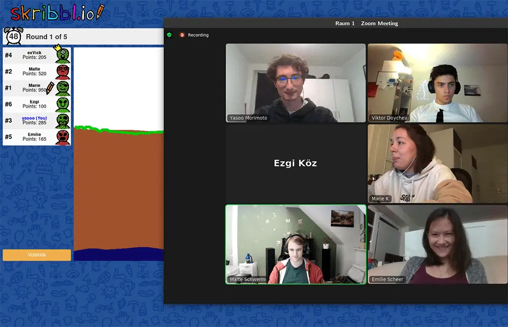
Figure 12: Science communication online event.
All in all, the project was about a lot more than science communication and education. In Greece, every night people from a different country presented something traditional and universal from themselves such as a specific dance or delicious recipe. This certainly fulfilled the idea of Erasmus+ to spread the love between countries and created many new international friendships. Just like the magic of iGEM brings people all over the world together.
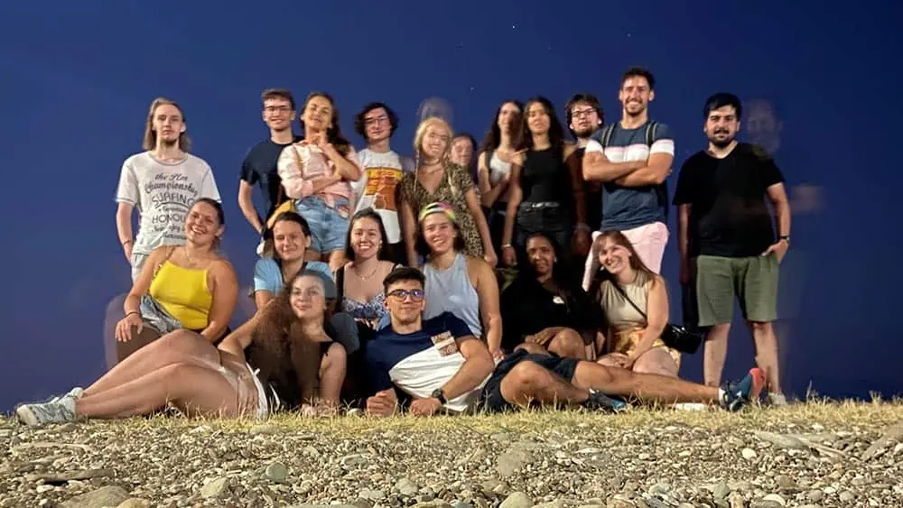
Figure 13: Group photo of all participating iGEM team members.
iJET
iGEM is a lot more than just a science project. It is about making the world a better place and bringing people from all over the world together. However, since the Covid-19 pandemic, this became a harder task. That inspired iGEM Team Darmstadt 2020 to collaborate with our ancestors in a way that became pretty usual during the past year. Together they managed to connect online with more than 25 other teams by letting the small paper plane iJET flying all over the world, compiling everything into a nice video.
This years iGEM Team Darmstadt continued the tradition and sent the small paper plane on a journey again. It flew through 33 different teams around the world including us. The product is a nice video produced by iGEM Team Darmstadt which can be seen here. A collaboration like this may seem small and insignificant, but it is proof that even in those hard times we can unite together and take a moment to smile and be joyful.
Rosalind Chronicles
As part of a collaboration between the Ulaval, Thessaloniki, Patras and Concordia iGEM teams on the topic of women in STEM research, we participated in their "Rosalind Chronicles" project. They called for an entry that would honor influential and innovative women in science. Each participating team wrote a text about their favorite female scientist. Since all members of our team agreed that women in STEM research have often been overlooked in the past, we chose a female researcher from the last century. Maud Leonora Menten worked in the field of enzyme kinetics and is famous for the "Michaelis-Menten equation" - a term everyone in biochemical subjects knows. We were impressed by her determination to work in what was then a male-dominated field, and by her decision to even move to Germany for research purposes because she was not allowed to do so in Canada. Michaelis-Menten kinetics also played an important role in modeling our TdT reaction, as we used the equation for calculations on dNTP incorporation (see Modeling). We thank the four organizing teams for the great opportunity to get to know other inspiring female scientists!
Maud Leonora Menten (March 20, 1879 -July 17, 1960) was a biomedical and medical researcher who is known for her work on enzyme kinetics and histochemistry. She studied medicine at the University of Toronto and was among the first women in Canada to earn a medical doctorate. Because women were not allowed to do research at the time, she decided to do research in other countries, such as Germany and the United States. In Berlin (1912) she worked together with Leonor Michaelis and co-authored their paper in Biochemische Zeitschrift. They showed that the rate of an enzyme-catalyzed reaction is proportional to the amount of the enzyme-substrate complex. This relationship is known as the Michaelis-Menten equation. She entered graduate school at the University of Chicago and obtained her PhD in 1916. From 1923-1950 she worked at the University of Pittsburgh and became Assistant Professor and then Associate Professor in the school of medicine and head of pathology at the Children's Hospital of Pittsburgh. In 1948 at the Medical School of the University of Pittsburgh she was awarded a professorship.
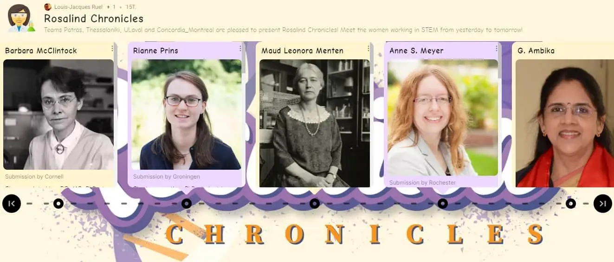
Figure 14: The assembled Rosalind Chronicles
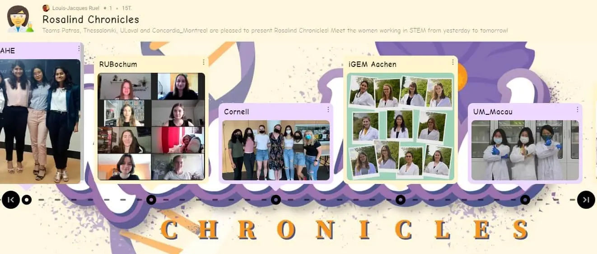
Figure 15: The collaboration also featured pictures of the female members of all participating teams
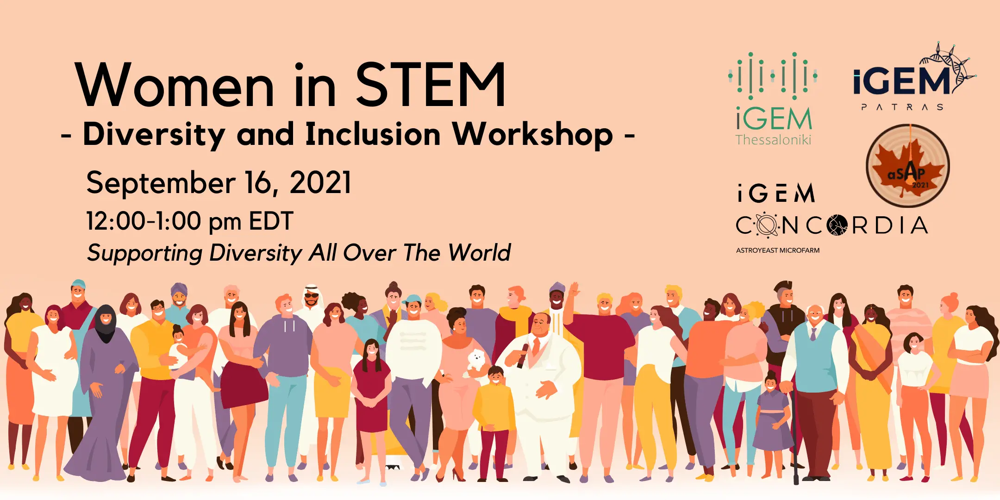
Figure 16: Women in STEM workshop organized by iGEM Concordia, ULaval, Patras and Thessaloniki
Online Escape Room Collaboration
During the corona crisis, it was hard for every team to meet up for collaborations in person. Together with iGEM Düsseldorf, Bonn and Kaiserslautern we thought of a digital activity we could work on collectively and provide for other people. We came up with an online escape room: Solving riddles together and working yourselves through a story related to our projects ending at the giant jamboree! Over the course of about 4 months, we worked out a script about a journey through the 4 cities of the participating teams. We met in Discord occasionally to discuss the progress and exchange our ideas. Every team contributed pictures for the storyline and 3 riddles, in which you have to apply your biological knowledge to solve them. The parts were finally assembled by Annika from iGEM Bonn using Google forms. Our riddles broached the issues of DNA synthesis, replication, and sequencing since we used all of these techniques during our project. iGEM Bonn thematized Lanthanide metal recycling, Kaiserslautern followed with a part about modular cloning and Düsseldorf finished with a few riddles about pathogen recognition in plants. We had lots of fun creating the riddles and thank the other teams for the collaboration. We hope that some people had fun playing the escape room!
If you want to try the escape room for yourself, click here.
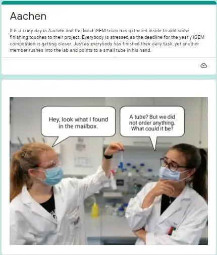
Figure 17: The starter page of the escape room
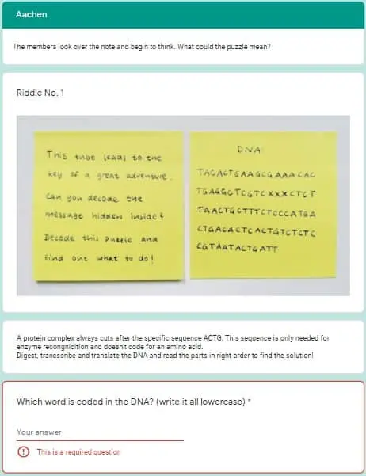
Figure 18: Our first riddle thematizing DNA restriction and transcription
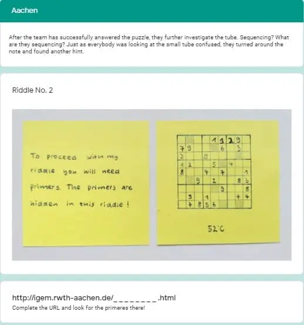
Figure 19: The second riddle dealing with PCR primer design
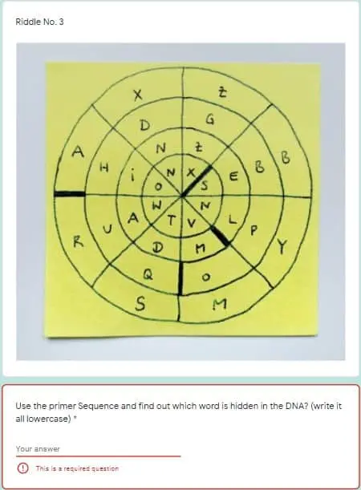
Figure 20: Our last riddle created in analogy to the amino acid codon wheel
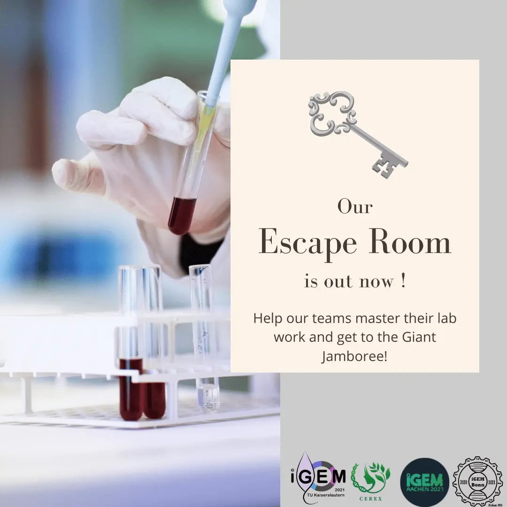
Figure 21: The final post for announcing the collaboration on social media